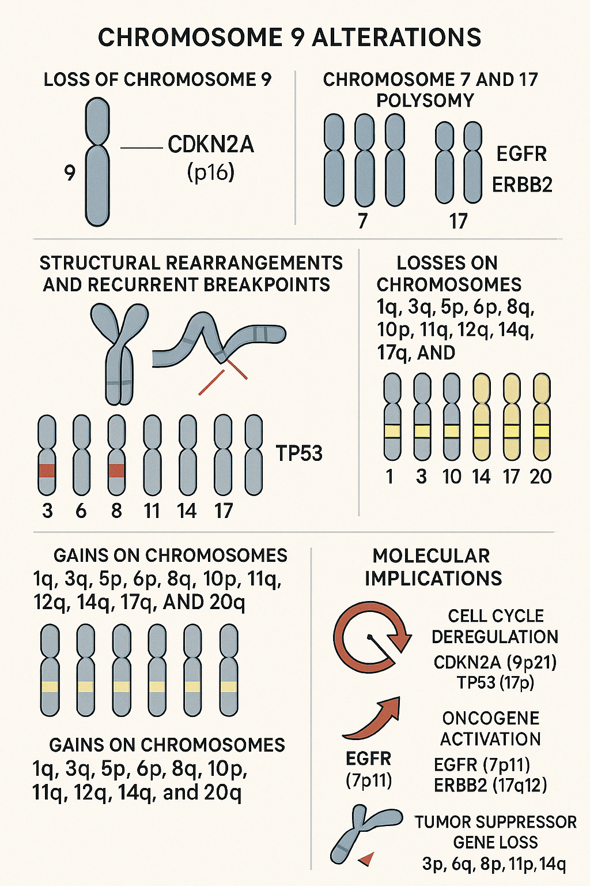
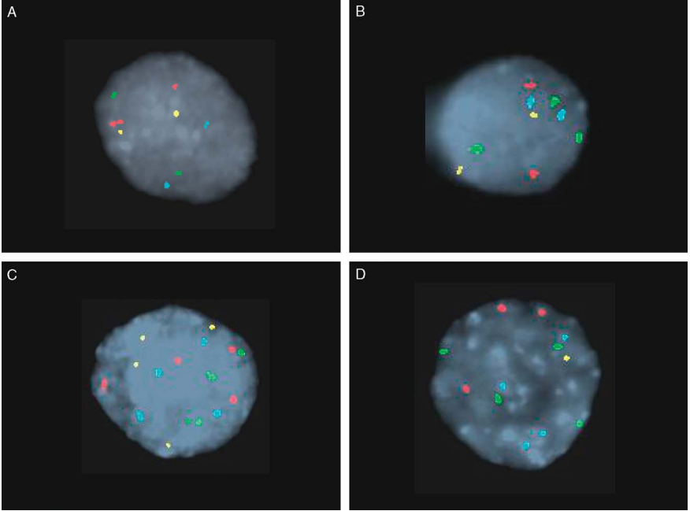

Bladder cancer cytogenetics is characterized by a wide range of chromosomal abnormalities that correlate with tumor type, stage, and progression. These genetic alterations help define two clinically distinct subtypes: benign tumors with relatively stable karyotypes and malignant tumors with complex chromosomal changes and genomic instability
Recurring Chromosomal Translocations
Chromosome 9 alterations: Loss of chromosome 9, especially monosomy 9 and deletions on 9p21, is the most frequent and early cytogenetic event in bladder cancer, observed in up to 80% of cases. This region harbors tumor suppressor genes such as CDKN2A (p16), whose loss contributes to cell cycle deregulation
t(11;14)(q13;q32): Characteristic of mantle cell lymphoma (MCL), this translocation leads to overexpression of CCND1 (cyclin D1) on chromosome 11q13, driving cell cycle progression.
Chromosome 7 and 17 polysomy: Gains or polysomy of chromosomes 7 and 17 are common, detected in 48–84% and 78% of cases respectively. These changes are associated with tumor progression and aggressiveness. Polysomy of these chromosomes is often linked to amplification of oncogenes like EGFR (7p11) and ERBB2 (17q12)
t(2;5)(p23;q35):
Structural rearrangements and recurrent breakpoints: Complex karyotypes with structural abnormalities are frequent in invasive bladder cancers. Recurrent chromosomal breakpoints involve regions such as 11p15, 3p12, 14q32, 19q13, and 6q23. Isochromosomes like i(8q), i(17q), and i(6p) have been observed, often correlating with advanced tumor stage. For example, isochromosome 8q (i(8q)) is linked to loss of 8p tumor suppressor genes and more infiltrative disease.
Losses on chromosomes 3p, 6q, 8p, 11p, 14q, and 17p: These deletions are common and often associated with high-grade and invasive tumors. Loss of 17p involves the TP53 tumor suppressor gene, frequently mutated in advanced bladder cancer
Gains and Trisomies:
Gains on chromosomes 1q, 3q, 5p, 6p, 8q, 10p, 11q, 12q, 14q, 17q, and 20q: These gains are observed in more than 25% of tumors and may contribute to oncogene activation and tumor progression
Cytogenetic Progression and Tumor Heterogeneity Early-stage bladder tumors tend to have fewer chromosomal abnormalities and more stable karyotypes, while invasive and high-grade tumors show complex numerical and structural aberrations, reflecting genomic instability and clonal evolution
Gains on chromosomes 1q, 3q, 5p, 6p, 8q, 10p, 11q, 12q, 14q, 17q, and 20q: The severity and frequency of chromosomal aberrations detected by techniques like fluorescence in situ hybridization (FISH) correlate with tumor invasiveness and histological grade, making cytogenetic profiling useful for prognosis
Molecular Implications Cell cycle deregulation: Loss of CDKN2A (9p21), mutations in TP53 (17p), and alterations in RB1 contribute to uncontrolled cell proliferation. Oncogene activation: Amplification of EGFR (7p11), ERBB2 (17q12), and HRAS1 (11p15) drive tumor growth.Cell cycle deregulation: Loss of CDKN2A (9p21), mutations in TP53 (17p), and alterations in RB1 contribute to uncontrolled cell proliferation. Tumor suppressor gene loss: Deletions in 3p, 6q, 8p, 11p, and 14q regions remove critical tumor suppressors, facilitating progression. Source


Figure : Representative examples of normal and abnormal cells with UroVysion FISH probe set: (A) normal (‘‘disomic’’) cell demonstrating 2 signals for all 4 probes, (B) trisomy 7 cells showing 3 copies of CEP7 but 2 copies of the other 3 probes, (C) tetrasomic cell showing 4 copies of all 4 probes, and (D) polysomic cell with gains (3 or more copies) for 2 or more of the 4 probes. UroVysion probe set: CEP3 (red), CEP7 (green), CEP17 (aqua), and 9p21 (gold). CEP indicates chromosome enumeration probe; FISH, fluorescence in situ hybridization. Source